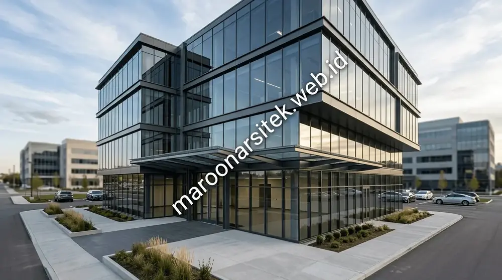
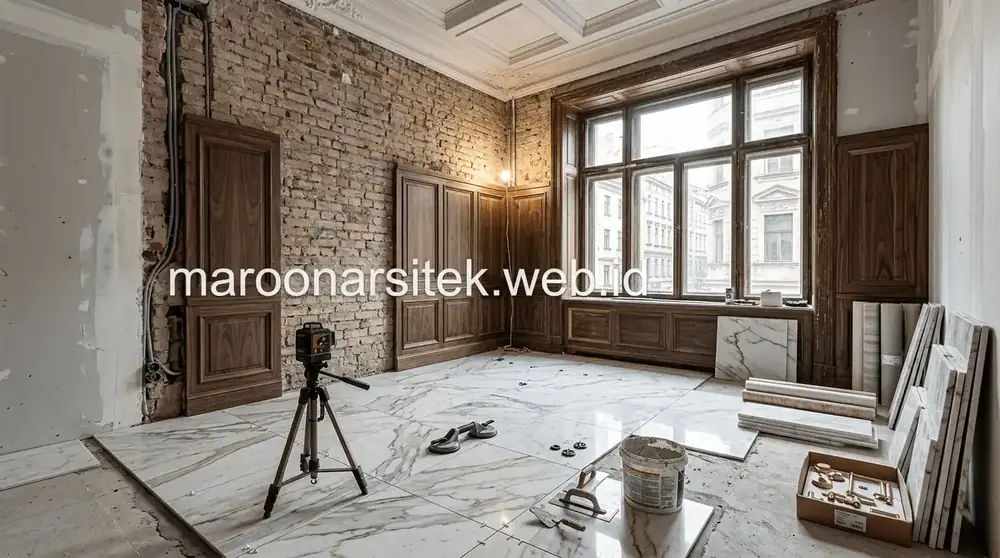
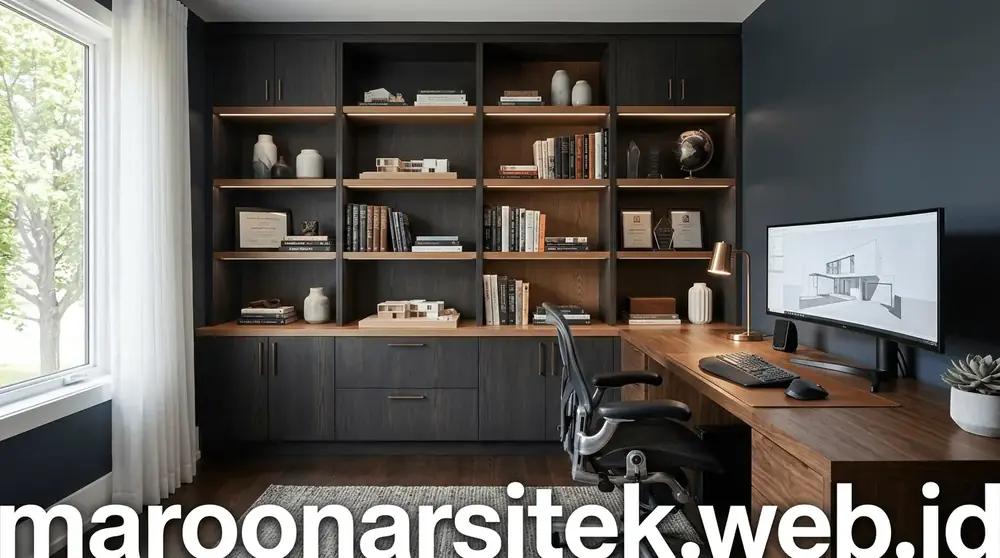

Pembangunan Properti Bisnis yang Siap Pakai
Dalam proyek komersial, waktu adalah modal. Keterlambatan proyek berarti hilangnya potensi pendapatan bisnis Anda. Maroon Arsitek menerapkan manajemen konstruksi profesional dengan manajemen kurva S yang ketat untuk memastikan gedung kantor, ruko, maupun tempat usaha Anda selesai tepat waktu dan siap beroperasi.

Jenis Bangunan Komersial yang Kami Layani
Ruko & Shophouse
Pembangunan ruko 2–4 lantai dengan struktur kokoh dan pembagian tata ruang multifungsi.
Gedung Kantor
Pembangunan gedung kantor perusahaan modern dengan insulasi suara dan efisiensi ruang kerja.
Kafe & Restoran
Konstruksi kafe dan resto instagramable dengan alur dapur komersial dan seating area berestetika tinggi.
Klinik & Sarana Usaha
Pembangunan klinik kesehatan/kecantikan dan retail showroom sesuai standar regulasi dan zonasi higienis.
Karya Proyek Komersial Maroon Arsitek


Pertanyaan Umum Kontraktor Bangunan Komersial
Informasi lengkap mengenai pilihan struktur baja vs beton, durasi pengerjaan, manajemen K3 proyek, dan legalitas SLF/PBG.
Struktur baja Wide Flange (WF) menawarkan kecepatan fabrikasi dan perakitan hingga 40% lebih cepat, bentang ruang yang lebih bebas kolom untuk fleksibilitas layout usaha, serta efisiensi beban fondasi pada bangunan seperti gudang, cafe, atau showroom.
Ya, selain pembangunan gedung baru dari nol, kami melayani perombakan fasad ruko komersial, perkuatan struktur lantai, renovasi layout kantor, serta pengerjaan fit-out cafe dan restoran.
Kami memiliki tim arsitek dan insinyur struktur bersertifikasi resmi (SKA/STRA) yang siap menyusun kalkulasi teknis dan gambar DED sesuai persyaratan SLF (Sertifikat Laik Fungsi) dan PBG Gedung Usaha.
Durasi pengerjaan ruko 2–3 lantai standar berkisar antara 4 hingga 7 bulan tergantung luasan tapak, spesifikasi material, dan kondisi daya dukung tanah lokasi proyek.
Bangun Gedung Bisnis Anda Bersama Kontraktor Profesional
Diskusikan spesifikasi bangunan, target tanggal serah terima, dan skema pembayaran proyek komersial Anda.